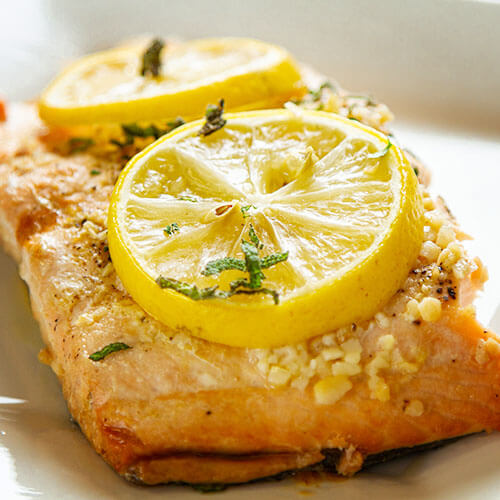

Baked Salmon
This classic dish is made with fresh salmon fillets, bread, and a simple herb sauce. It's perfect for a family dinner.
This classic dish is made with fresh salmon fillets, bread, and a simple herb sauce. It's perfect for a family dinner.
This simple and delicious grilled chicken dish is perfect for a family dinner. It's made with mozzarella cheese, tomatoes, and basil.
This simple and delicious pasta dish is perfect for a family dinner. It's made with spaghetti, tomatoes, basil, and garlic.